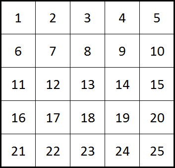

Problem 575: "Wandering Robots" (level 18)
It was quite an ordinary day when a mysterious alien vessel appeared as if from nowhere. After waiting several hours and receiving no response it is decided to send a team to investigate, of which you are included. Upon entering the vessel you are met by a friendly holographic figure, Katharina, who explains the purpose of the vessel, Eulertopia.
She claims that Eulertopia is almost older than time itself. Its mission was to take advantage of a combination of incredible computational power and vast periods of time to discover the answer to life, the universe, and everything. Hence the resident cleaning robot, Leonhard, along with his housekeeping responsibilities, was built with a powerful computational matrix to ponder the meaning of life as he wanders through a massive 1000 by 1000 square grid of rooms. She goes on to explain that the rooms are numbered sequentially from left to right, row by row. So, for example, if Leonhard was wandering around a 5 by 5 grid then the rooms would be numbered in the following way.

Many millenia ago Leonhard reported to Katharina to have found the answer and he is willing to share it with any life form who proves to be worthy of such knowledge.
Katharina further explains that the designers of Leonhard were given instructions to program him with equal probability of remaining in the same room or travelling to an adjacent room. However, it was not clear to them if this meant (i) an equal probability being split equally between remaining in the room and the number of available routes, or, (ii) an equal probability (50%) of remaining in the same room and then the other 50% was to be split equally between the number of available routes.


The records indicate that they decided to flip a coin. Heads would mean that the probability of remaining was dynamically related to the number of exits whereas tails would mean that they program Leonhard with a fixed 50% probability of remaining in a particular room. Unfortunately there is no record of the outcome of the coin, so without further information we would need to assume that there is equal probability of either of the choices being implemented.
Katharina suggests it should not be too challenging to determine that the probability of finding him in a square numbered room in a 5 by 5 grid after unfathomable periods of time would be approximately 0.177976190476 [12 d.p.].
In order to prove yourself worthy of visiting the great oracle you must calculate the probability of finding him in a square numbered room in the 1000 by 1000 lair in which he has been wandering.
(Give your answer rounded to 12 decimal places)